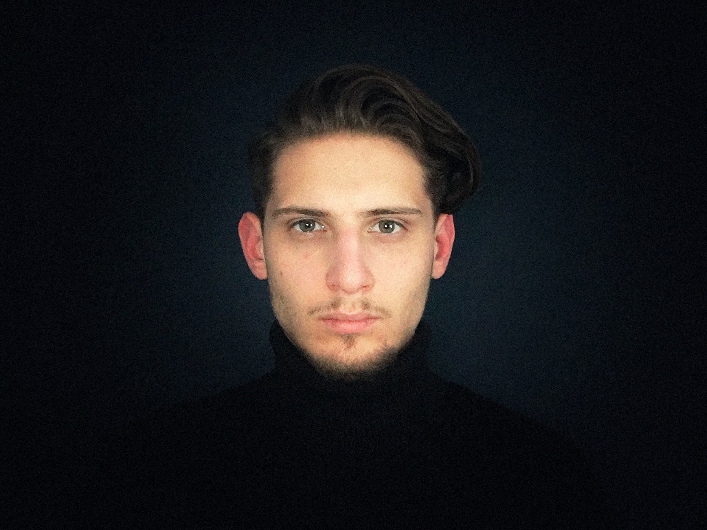

_
Profile
Born & raised in the heart of Transylvania, I was genuinely influenced by the multicultural environment noted by german and hungarian historical accents. As a professional, with over 4 years of experience, I got involved in a variety of projects with companies or individuals. In the work process, I always strive to bring new ideas and elevate the level of thinking in a synergy that can be very productive in creating the best outcome. Clients with a desire to be preeminent and rebellious against the status quo are a great source of inspiration for me and I am always committed to their project. Most of the time I work with startups or individuals that are into creative, cultural or environmental fields, but I am always up for a new challenge!
_
Studio
Vibråntmatter is an individually run multi-discipline creative studio by Sergiu-OCtavian, focusing on creating digital experiences that have high sensori-emotional values built on strong functionality principles.
_
Manifesto
Everything looks still into our eyes, but the world is vibrating. All material things are vibrating at us in this moment and we are vibrating at them.
The creative process can be defined as the action of deconstructing something in order to reconstruct it in a different way. In this process, new vibratons are created and once we recognize that all matter is actually vibrating energy, we can begin to form a new vision for the world, ethics and interaction.
_
Worked with
Deutsches Kulturzentrum Klausenburg / Geothe Institut
23FiLM
Notes & Ties
Clujotronic
Verkla
_
Awards
2007 - Originality Prize @Sound of Spheres (National Painting Contest)
2011 - Mention in section Web Pages @Infoeducatia